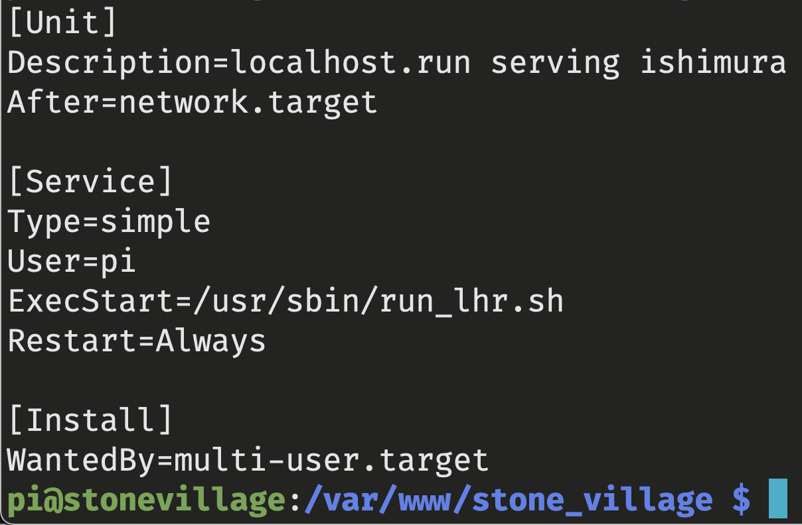
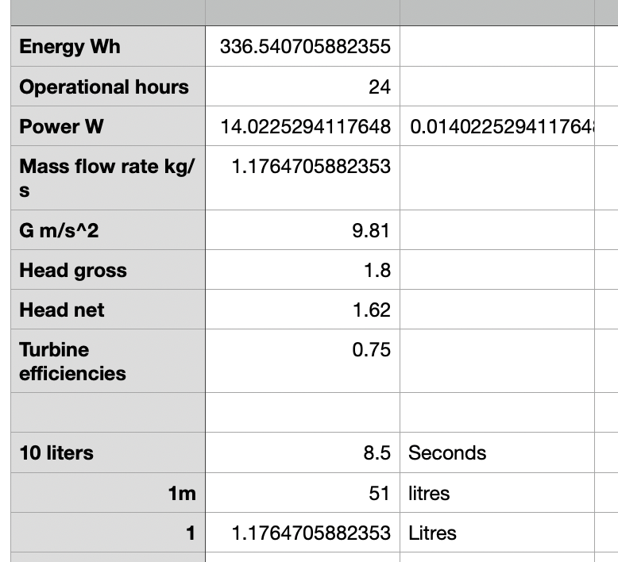
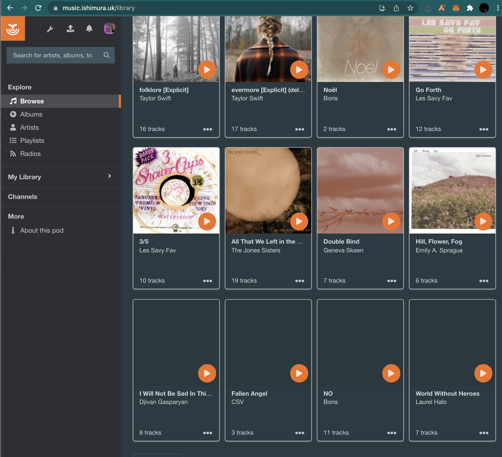
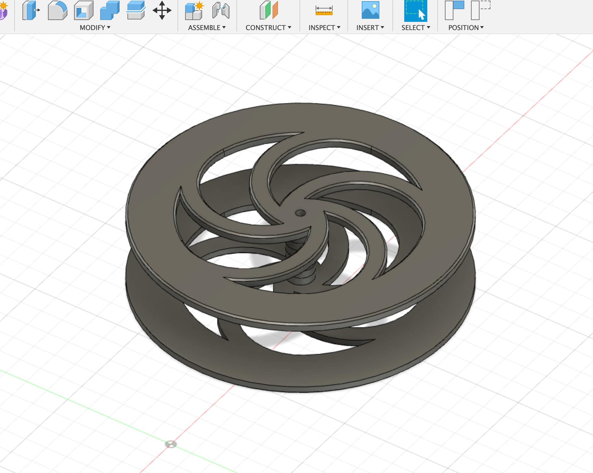

--
This blog is pretty light, so I decided to try running it on a raspberry pi zero. It was pretty striaght forward setting up a local network server with nginx, but i wanted to have https://ishimura.uk pointing at it. Normally that would involve forwarding ports on the router to the pi server and setting up dyndns to keep the ip changes on the dns side. But my IPS is a CGNAT - no ipv4 and no way to forward ports. So I had to find another way.
After a bit of searching around different approaches for tunnels/openvpn/etc, I found localhost.run which seems to work over ssh, so no need to install anything to try it out. I added my domain to their service, ssh'd into the pi and ran the command:
ssh -R ishimura.uk:80:localhost:80 localhost.run
and now my pizero is serving the blog to the internet! Will see how it holds up, but it was a breeze getting it running. I thought the CGNAT vpn issues we're going to be a real pain so I'm happy to pay the £3.50 a month for a one line fix.
I tidied this up by writing a systemd service to keep the connection alive, though i do need to work out getting the www to point to the same place. Next up is looking into git hooks so that i dont have to ssh into the pi to pull the new posts in.

Now that i have a server with a bunch of gpio headers I'd like to play logging some sensors on the site, maybe power stats?
The raspberry pi zero has a very small power consumption at around 1 watt source and I have an old campervan trickle charge solar panel which I think will be able to keep it going.

I also have a small stream in the garden, so i did some calculations on head preassure and flow rate and worked out i can get around 14W off the stream. So I could reasonably power my funkwhale server by run it over the same setup on a bigger pi 4 (which use a couple more watts than the zero), it is currently on digital ocean but it would be nice to have it running locally.

I've started mocking up files for a waterwheel to cnc, then run a belt to a small altenator and see what power I actually get off the stream. Hopefully soon I will have stream powered media streams alongside my solar powered blog 🔆
